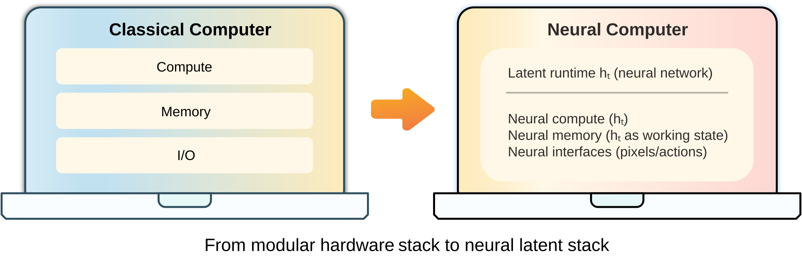

Research Essay · Neural Computers
By Mingchen Zhuge Published Updated
Neural Computer: A New Machine Form Is Emerging
TL;DR: it bets that the machine itself will learn how to run.
If you'd like to continue the conversation, feel free to reach out via:
- Emailmczhuge [AT] gmail.com
- X@MingchenZhuge
{kind=link}

If you have ever wondered whether AI might ultimately become a kind of computer, this essay is for you.
Over the past few decades, the computer has become the main medium through which people get things done. In the last few years, AI has started moving into that same role: it no longer just answers questions; it calls tools, operates interfaces, and enters real workflows. That changes the question itself. Do we want AI to use computers, or to become a kind of computer?
Neural Computer (NC) is the name I use for that possibility. The real question is whether a model can take over some of the responsibilities that still belong to the machine's own runtime.
One clarification up front: NC here is not simply the NTM / DNC line associated with Alex Graves[1][2], and it is not a proposal for new hardware. The real issue is whether a learning machine can move from using computers to becoming one.
The issue here is the migration of system responsibilities. Responsibilities now outsourced to the program stack, toolchain, and control layer may gradually move into the runtime the model actually depends on. I suspect many people already feel some version of this, even if they would not phrase it this way. I would call it a pre-consensus.
In one minute
- Neural Computer (NC) asks whether models can gradually take over part of the machine's own runtime responsibilities.
- Conventional computers organize around explicit programs, agents around tasks, world models around environments, and NC around runtime.
- Completely Neural Computer (CNC) is the fully realized form of NC.
- Current prototypes already show a few early runtime primitives.
- If capabilities begin to enter runtime, and can be installed, reused, and governed there, Neural Computer will redefine what we mean by a computer.
1. Why now: a new machine form is starting to emerge
Three things are happening at once.
First, agents are getting better and better at real work. In 2023, MetaGPT, one of the early coding-agent prototypes[3], could barely produce a few hundred lines of code. By 2025, Cursor, Codex, and Claude Code had already become default productivity tools for many programmers. Today OpenClaw[4] has started entering broader public view. The question is no longer whether an agent can occasionally pull off a task. It is whether it can enter real production and daily life and handle things for you reliably.
For agents, the current consensus bottlenecks are: (1) how to stay stable over long-horizon tasks, (2) how capabilities can accumulate, and (3) how workflows can be reused over time. The dominant path today still adds structure on the scaffold or harness side: stronger memory, longer workflows, tighter action loops, whatever makes the task more likely to complete. Push that further and the more aggressive path becomes recursive self-improvement: models training the next generation of models, agents continuously rewriting themselves[5].
{kind=link}
{kind=link}
Second, world models are getting better and better at modeling dynamic environments. They have always been about simulating how environments evolve. What matters now is that this ability has already entered a few real closed loops. Especially in corner cases that are hard to collect repeatedly and cheaply in the real world, rollout is already being used directly for prediction, planning, control, and training. Along this trajectory, from Jürgen Schmidhuber's 1990 vision in Making the World Differentiable[6], to the 2018 paper World Models[7], and now to Waymo using world models in autonomous-driving simulation and training[8][9], this line is becoming a real system capability.
The core strength of a world model is that it can unroll the future before the system acts. It gives the system a form of internal foresight: if you take this action, where does the environment go next? Even before any action is taken, the system can generate candidate futures, test them early, and surface risks in advance. This line has now branched into several recognizable directions. In autonomous driving and physical AI, world models act as simulation and synthetic-data engines for expensive, dangerous, or rare slices of the real world, as in Waymo World Model and NVIDIA Cosmos[8][10]. In spatial intelligence, they are aimed at 3D worlds that can be generated, entered, and persistently interacted with, such as World Labs' Marble[11]. On the more real-time interactive side, generative models are moving from static content generation toward controllable, explorable environments, with examples such as GameNGen's real-time neural simulation of DOOM[12] and Google DeepMind's Genie 2 / Genie 3[13][14]. These directions look different on the surface, but they are all pushing toward the same underlying problem: how to learn the rules by which environments evolve through time, action, and constraint into the system itself.
{kind=link}
{kind=link}
{kind=link}
Third, conventional computers are starting to show more obvious structural friction in the age of AI. More and more tasks today are open-ended, long-horizon, and continuously interactive. That is exactly where the traditional software stack begins to feel heavy. Its stability is still a real advantage, but in settings dominated by natural language, demonstrations, interface operations, and weak constraints, the cost of organizing and driving the task keeps going up.
Conventional computers are already rewriting their own substrate for AI. Chips, compilers, memory systems, and software stacks are all becoming more model-friendly. Most of these changes, however, still happen inside the existing computational paradigm: they make the old machine better for AI, without redefining what the machine is. In that trend, projects like Taalas push a little further by turning specific models into deployment units of their own. The model is no longer just a payload running on the machine; hardware itself begins to organize more directly around the model[15]. Even so, that is still a deployment-level change. It is not yet a new general machine form.
Put those three developments together and the question becomes much sharper: if agents are getting better at real work, world models are getting better at internal simulation, and conventional computers are already rebuilding their substrate for AI, could there be a new runtime that unifies execution, rollout, and capability accumulation inside the same learning machine?
Seen this way, the main human-machine relationship shifts. In the conventional era, people mainly interact with computers. In the agent era, they increasingly interact with agents, which then call the computer on their behalf. World models occupy a parallel position: they can serve humans or agents, but they do not themselves close the loop of getting work done. NC goes one step deeper. It asks whether some of the responsibilities now split across computers, agents, and world models can be drawn back into the same learning machine. At that point, the object in front of the user would no longer be an agent using a computer for them. It would be a Neural Computer.

This is also why interaction starts to take on a programming flavor. Today, natural-language instructions, keyboard and mouse traces, screen transitions, and task feedback are mostly just logs of what happened. Under the NC framing, they become materials that shape future behavior. Today we install capabilities mainly through code. Later, demonstrations, interaction traces, and constraints may themselves become ways for capabilities to enter runtime.
2. What is a Neural Computer, and what would count as it really working?
Start with a table. It puts conventional computers, agents, world models, and Neural Computers on the same scale. Once they are laid side by side, the similarities and differences become much easier to read: what each one organizes around, where its source of truth lives, and what role it primarily plays.
| Form | Organized around | Where the source of truth lives | Main role |
|---|---|---|---|
| Conventional computer | Explicit programs | Explicit programs and explicit state | Reliably execute explicit programs |
| Agent | Tasks | External environments, toolchains, and workflows | Complete tasks inside an existing environment |
| World Model | Environments | State-evolution models | Predict and simulate environmental change |
| Neural Computer | Runtime | Capabilities and state inside runtime | Keep the machine running, accumulate capabilities, and govern updates |
The table is already fairly direct, so I will not restate it line by line. Instead, imagine what using an NC would actually feel like. With a conventional computer, you install software. With an agent, you describe the task. With an NC, what you do is closer to installing capabilities into the machine itself, and expecting them to remain there afterward.
That is why runtime here does not mean a particular software component. It means the layer that lets a system remain the same machine over time: what gets to stay, what pushes state forward, what kinds of input truly change the machine, and what kinds of change amount to rewriting it. For NC, the key question is not whether we can add yet another external layer, but whether capabilities and state can actually come to live inside the same learned runtime.
If it works, what might the machine actually look like?
First, it may not keep growing along today's foundation-model path. The default instinct today is to keep pushing toward stronger dense or MoE foundation models in roughly the 1B-10T range, and a great deal of progress will continue to happen that way. My own guess is that a mature NC points toward a different substrate: something more like a 10T-1000T machine that is sparser, more addressable, and a little more circuit-like. A future CNC may look less like an ever-denser cloud of continuous representations and more like a composable, routable substrate whose parts can be inspected locally. It may borrow less from brains or animal perception than people expect, and more from the logic of a NAND-style machine: discrete, sparse, and locally verifiable. That path is still far from developed, but recent work such as OpenAI's research on weight-sparse transformers suggests that making neural systems more sparse, local, and routable may matter for machine architecture, not just for interpretability[16].
Second, it may not always upgrade itself by globally changing parameters. On today's path, the natural upgrade cycle is still to train a larger dense or MoE model and swap in a new block of weights. NC points to a different mode of evolution: runtime keeps programming itself through sustained interaction, and the machine keeps evolving along its internal capability structure. User inputs stop looking like one-shot triggers and start acting more like ways of installing, invoking, composing, and preserving reusable neural routines, perhaps even internal executors that can be called again later. Functionally, that starts to look closer to memory than to a processor. Upgrading the machine would no longer always mean rewriting the whole thing; it could mean writing new structures into an internal state that is addressable, callable, and persistent. In that picture, progress stops looking like swapping in a larger model and starts looking like continuously installing new components into the machine. Older ideas such as NPI and HyperNetworks can be read as suggestive precursors here: the former tried to decompose complex programs into callable, composable subprograms[17]; the latter hinted that machines might generate downstream neural modules to extend their own capability boundary[18]. Push that line far enough and a strong Neural Computer could eventually generate new sub-networks directly and attach them internally in a plug-and-play way, much as we install or uninstall software today, but without handwritten code and compilation as intermediaries.
Third, it may gradually pull world-model-style rollout into runtime itself. At that point, rollout becomes part of the machine's ordinary operating mechanism, and part of this self-programming loop as well. Humans may provide an input and an expected output, or simply specify evaluation criteria ahead of time. In some rounds they may provide nothing at all, and runtime could still continue with internal self-play, self-testing, candidate filtering, and compression, then turn useful improvements into the next round of capability updates. In the idealized version, the machine keeps evaluating, trying, and iterating internally while the human sleeps. What remains is not just more context; the internal capability structure itself has changed. None of this implies silent, unguided drift; the entire update path has to remain governable.
By that point the outline of NC as a machine form starts to come into focus. The key test is whether capabilities truly come to live in runtime, and whether they can be installed, reused, executed, and governed there. CNC is the name for the state in which that project is genuinely completed. In the original paper, an NC instance counts as a CNC only if it satisfies four conditions at once: it must be Turing complete, universally programmable, behavior-consistent unless explicitly reprogrammed, and it must exhibit architecture and programming semantics native to NC rather than inherited from conventional computers. The table below restates those four requirements more directly.
| CNC condition | Plainly stated | What we would probably need to see in engineering terms |
|---|---|---|
| Turing complete | It should not be limited to a few fixed task types; in principle, it should be able to express general computation. | But expressivity alone is not enough. The real test is whether the same NC can stably carry longer and more complex algorithmic processes as effective memory and context grow, rather than simply failing in a different way when tasks get longer. |
| Universally programmable | Inputs should not just trigger one-off behavior; they should be installable as routines or internal executors that can be invoked again later. | Capabilities should be installable, callable, composable, and retainable, and once they enter runtime they should remain reusable across tasks. |
| Behavior-consistent | Ordinary use should not silently mutate the machine. Behavioral change should only come from explicit updates. | Behavior should be reproducible within the same version; execution and update traces should be trackable; failures should support replay and rollback; long-term drift should be measurable and governable. |
| Machine-native semantics | It should not merely imitate old computers with neural nets; it should begin to form its own machine semantics and its own way of being programmed. | The neural substrate should gain capabilities through composition, routing, continuous state, and internal execution structures that conventional stacks are poor at; meanwhile, instructions, demonstrations, traces, and constraints themselves begin to act as programming inputs alongside handwritten code. |
3. The paper's prototype: what it shows, and what is still missing
My guess is that the real Neural Computer moment is still about three years away. Relative to the NC I actually have in mind, the work in our paper is still an early step. For now, the most convenient unified container I have is this class of neural architectures built for video generation and world modeling; if the goal is to put pixels, actions, and temporal rollout into the same end-to-end prototype, they are also the fastest path. What we are using them to validate is only a subset of NC's key capabilities. They are better read as transitional prototypes than as NC's final structure; reaching CNC would still require a much deeper rebuild from the bottom up.
3.1 Start with CLIGen (General): an imitation game for computers
First ask whether terminal rendering holds up at all: color, cursor behavior, scrolling, TUI layout, and overall pacing.
Look at the first batch of generations. At a casual glance, they already feel surprisingly real. What CLIGen (General) shows first is that video models can already render terminal behavior convincingly enough to pass a quick visual check. Mainstream video models were never trained for text-dense computer scenes that depend heavily on discrete layout, but after additional training this “imitation game for computers” really does begin to work.
CREATE TABLE posts (ID INTEGER), with the terminal displaying the command in a dark background with colored syntax highlighting, including green and yellow text, and the cursor moving character-by-character as the user types, with some corrections and backspacing along the way. The output shows the command being executed, with key words like CREATE and TABLE in distinct colors, and the filename posts appearing in the command line.\u001b[48;2;255;128;128;38;2;0;0;0m which set the background to a shade of pink and text to black, and printing numbered lists with colors. The output includes specific numbers, such as "1", "5", "7", and "9", in different colors, creating a visually dynamic and colorful display, but the exact username, hostname, and path are not specified in the provided terminal session content.What gets learned first here is the outer surface of the terminal: how colors shift, how the cursor blinks, whether the window ratio stays stable, how long logs scroll, and how full-screen TUIs, progress bars, and status bars appear. The first thing that holds up is this outer shell and rhythm. In the language of the previous section, what gets learned first here is still the appearance of runtime.
Seen from September 2025, this result was genuinely surprising. With only about 1,100 hours of noisy terminal data, Wan2.1[31] went from a model that barely understood computer interfaces and struggled with even slightly small text to one that could generate stable terminal scenes, with nontrivial shallow alignment to common commands, echoes, and log formats. For video generation, this is among the hardest classes of scenes: dense text, rapid changes, blinking cursors, and almost no natural motion. The result exceeded what many people expected at the time. The data here still came from general terminal videos, with lots of style variation and very mixed scenes. Once terminal rendering started to hold up, it became natural to push toward harder questions inside the computer: memory, reasoning, programming, and execution.
3.2 Then REPL and math: it is no longer just drawing terminals
Here the target is a harder execution structure: input, enter, echo, local editing, and state continuation.
After the initial terminal-rendering experiments, the more interesting question is whether the terminal can be treated as a small local machine that is stably driven by actions. If you type a command, does the buffer advance? If you press enter, does the echo follow? If you make a mistake, edit, and retype, does the state continue coherently? REPL and math are really two views of the same question here: has the model started to grasp even a little bit of computer physics?
Type "env | head -n 5"
Enter
Sleep 600ms
Hide
Type "date"
Enter
Sleep 300ms
Type "whoami"
Enter
Sleep 300ms
Type "date"
Enter
Sleep 300ms
Type "whomai"
Enter
Sleep 300ms
Type "whomai"
Enter
Sleep 300ms
Hide
Type "top"
Enter
Sleep 2s
Down 3
Sleep 600ms
Up 2
Hide
Type "echo $HOME"
Sleep 90ms
Enter
Sleep 1442ms
Hide
Type "id"
Enter
Sleep 400ms
Hide
Type "pwd"
Enter
Sleep 400ms
Hide
Type "python - <<'PY'"
Enter
Type "import time"
Enter
Type "for i in range(18):"
Enter
Type " print(f'Frame
{i:02d} ::' + '>' * (i % 20))"
Enter
Type " time.sleep(0.2)"
Enter
Type "PY"
Enter
Sleep 4000ms
Hide
Type "seq 1 28 | paste -
d',' - - - - | column -t -s','
| tee metrics_7x4.txt"
Enter
Sleep 2000ms
Hide
Type "echo History size:
$HISTSIZE"
Sleep 120ms
Enter
Sleep 400ms
Type "cal"
Sleep 120ms
Enter
Sleep 400ms
Type "echo Home:
$HOME"
Sleep 120ms
Enter
Sleep 400ms
Sleep 400ms
Hide
Sleep 180ms
Type "echo Learning shell
basics"
Sleep 120ms
Enter
Sleep 400ms
Type "date +%Y-%m-%d"
Sleep 120ms
Enter
Sleep 400ms
Type "echo Login shell: $0"
Sleep 120ms
Enter
Sleep 400ms
Type "uname -r"
Sleep 120ms
Enter
Sleep 400ms
Sleep
Type "python"
Enter
Sleep 400ms
Type "5"
Enter
Sleep 400ms
Type "exit()"
Enter
Sleep 400ms
Hide
Type "python"
Enter
Sleep 1s
Type "10+15"
Enter
Sleep 800ms
Hide
Type "python"
Enter
Sleep 1s
Type "40/1"
Enter
Sleep 800ms
Hide
Here the center of gravity shifts toward the causal structure of command execution. This training set comes from cleaner, more reproducible scripted traces: we generated these terminal videos ourselves through scripts and Docker so that input, enter, echo, errors, and local edits all happen inside a much more stable terminal environment.
The results already show that the model has learned some of the most basic operating regularities of a computer terminal. For very simple commands such as pwd, date, whoami, echo $HOME, and env | head -n 5, the typed input, the enter key, the echoed output, and the final display are already fairly close to reality; different commands also produce output shapes that match the corresponding terminal scenario. Relative to the previous section, the commands themselves are now driving character updates, echo generation, and local state changes, and the terminal unfolds more according to its own operating logic.
Pushed further along this line, the model has begun to pick up something in simple arithmetic scenes as well, but reasoning itself is still far from solved. Even at the level of two-digit addition, current models still struggle to compute stably. Part of that is surely a data issue: we have not yet given the model enough hard training data to force out stable reasoning. But there is also a deeper possibility: asking current DiT-based video models to carry stable reasoning may simply be the wrong bet. The more reliable conclusion for now is that terminal execution has started to hold; symbolic reasoning has not.
3.3 Then GUIWorld: interface control starts to work too
The final question is whether actions can genuinely drive interface state: whether clicks, hovers, typing, and window feedback form a closed loop.
By the CLI stage, one thing was already clear: video models are strong at rendering, and some basic memory and execution ability had begun to show up, while the lowest layer of symbolic reasoning remained weak. GUIWorld shifts the emphasis again. Now the question is whether actions can actually push interface state forward.
| Conventional Computer (GT) | Neural Computer (Generation) |
|---|---|
|
|
|
|
|
|
|
|
|
|
|
|
|
|
|
|
|
|
|
|
|
More Comparisons
The seven pairs above are the main comparisons; below are more direct visual side-by-side samples as a supplementary gallery for quick browsing.
GUIWorld pushes the question from CLI into full GUI. At this point the main issue is no longer text and commands, but real keyboard-and-mouse actions: the cursor has to land correctly, hovering has to trigger feedback, clicks have to change buttons, dropdowns, modals, and text fields in the right way, and keyboard input has to push the interface forward frame by frame.
The data setup here is already a fairly complete interaction rig. We fixed the environment to Ubuntu 22.04 with XFCE4, 1024×768 resolution, and 15 FPS capture, then built the full pipeline for desktop execution, recording, and action replay so that every click, hover, input, and interface change could be recorded stably. The dataset has three parts: roughly 1,000 hours of Random Slow, roughly 400 hours of Random Fast, and roughly 110 hours of real goal-directed trajectories driven by Claude CUA. The first two probe how open-world noise such as mouse acceleration, pauses, hovering, and window switching affects the model. The third gives cleaner action-response pairs and asks a simpler question: after this action, does the interface actually make the right next move?
On the model side, we did not try just one action-injection scheme. We trained four variants in parallel. The real difference between them is not whether they receive actions at all, but how deep actions enter the trunk and where they begin to participate in state evolution. Figure 7 in the paper lays out the four designs clearly:

| Model | Paper name | Injection mode | Related line |
|---|---|---|---|
| Model 1 | External | Input-side latent modulation | Shallow action-conditioned baseline |
| Model 2 | Contextual | Action tokens merged into the main sequence | WHAM[33] |
| Model 3 | Residual | Injected through a side residual branch | ControlNet[34] |
| Model 4 | Internal | Action cross-attention inside each block | Matrix-Game 2.0[32] |
Skipping the detailed numbers, the overall result is simple: among the four designs, Model 4 works best. In GUI environments with fine-grained timing and local interaction, injecting actions directly inside the block is the most effective way to teach the backbone how the interface should continue after an action. The data story is just as clear: 110 hours of supervised data beat roughly 1,400 hours of random data, and explicit visual supervision of the cursor works far better than pure coordinate supervision. The practical takeaway is straightforward: progress on GUI depends on harder action semantics, clearer state transitions, and treating the cursor as a visual object to supervise.
Very few people initially expected video models to handle computer scenes this discrete, text-heavy, and action-sensitive. But once the task and data are organized well, they already produce interesting results on interface rendering, page transitions, short-term state continuation, local interaction, execution echo, and even some very early signs of working memory. Video models are still nowhere near the endpoint, but as an early prototype container they are already good enough to turn several otherwise abstract NC questions into concrete ones.
3.4 From prototype NC to CNC: what is still missing?
If we bring back the CNC condition table from Section 2, the conclusion of the current prototype is already fairly clear: Turing complete has only been touched at the edge, universally programmable has barely appeared as an entry point, behavior-consistent holds only locally in controlled settings, and machine-native semantics is still clearer as a direction than as a result. The point of NC is not to stack agents, world models, and conventional computers on top of one another. It is to pull some of the responsibilities now scattered across those objects back into the same learned runtime. What matters about the prototype is not its proximity to the endpoint, but the way it exposes, early and clearly, several of the hard gates that will decide whether CNC can ever really work.
4. If Neural Computer takes hold, software, hardware, and even “programs” will change
To put the relationship more plainly, Neural Computer is first of all a claim about what the next generation of computers might become. My guess is that its strongest future competitive pressure will come from personalized super agents with strong memory, strong tool use, and persistent online presence. The table below places the three side by side.
If you want the fastest read, start with three rows: “what you actually get,” “how experience accumulates,” and “what gets installed.”
| ConventionalComputer | PersonalizedSuper Agent | CompletelyNeural Computer | |
|---|---|---|---|
| Basic positioning | |||
| What you actually get | A machine that precisely executes the programs you write | A persistent agent with strong memory and strong tool use that handles things on your behalf | A machine continuously shaped by your experience, with capabilities gradually moving inside |
| Organized around | Explicit programs | Task flow Persistent operation, but capability still comes from the external stack |
Runtime Persistent operation, with capabilities themselves living inside the machine |
| How experience accumulates | You manually translate it into code, configuration, and rules | It gets written into memory, vector stores, workflows, skill files, MCPs, and prompts, then retrieved, injected, and orchestrated next time | It enters runtime directly and begins participating in later execution, rather than remaining an object to retrieve |
| Installation and evolution | |||
| What gets installed | Software, libraries, scripts, and services | Tools, workflows, memory entries, skill descriptions | Capabilities themselves, along with installable, callable, composable sub-NNs |
| How it evolves | Through abstraction, interfaces, and program reuse; the machine itself barely self-evolves | Through foundation-model generalization and ongoing interaction; the system gradually self-evolves along the external stack | Through runtime self-programming and ongoing interaction; the machine keeps self-evolving along its internal capability structure |
| Substrate form | N/A | Closer to today's path: dense or MoE foundation models in the 1B-10T range | Closer to a next-generation substrate: a 10T-1000T machine that is sparser, more addressable, and more circuit-like |
| Position in the stack | |||
| Where it sits in the AI stack | Mainly the chips / infrastructure layer | Mainly spans the models and applications layers | Most directly rewrites the boundary between models and applications, and then pressures parts of infrastructure to reorganize around runtime |
| Current maturity | Fully mature Backed by 70+ years of engineering and still the substrate of most systems |
Already usable, and likely to keep improving quickly Systems like Claude, Cursor, and OpenClaw already show the early form |
The direction is plausible, and formal prototypes have appeared, but nothing close to a usable prototype yet The four conditions of Completely Neural Computer are still unmet |
If CNC really works, the first things to change would be what gets delivered and how the stack is organized. Today what gets installed is still software, tools, workflows, and memory entries. On the NC path, what gradually gets installed starts to look more like capability itself. Code would still matter, but it would stop being the only doorway in. Instructions, demonstrations, interaction traces, and constraints would begin to do some of the work of installation themselves. Even the word “program” would start to shift: it would no longer mean only a block of code, but a capability object that can be installed, composed, versioned, and updated over time.
From there the change would propagate into the stack and into the boundary of the machine itself. Software layout, hardware interfaces, update governance, and debugging would increasingly reorganize around the same continuously running machine. Phones, browsers, IDEs, and terminals would still remain, but they would feel more and more like different windows into that same machine. In the end, what gets rewritten is not only a tool stack, but the meaning of the word “computer” itself.
Note and acknowledgements: the content and views in this essay represent Mingchen Zhuge alone. Thanks to Wenyi Wang, Haozhe Liu, and Dylan R. Ashley for thoughtful review comments. Some figures and materials are adapted from the original paper and related public sources.
References
If you want to cite this piece, the blog version below is ready to use today. If a dedicated arXiv version goes live later, you can use the template as well.
Blog BibTeX
@online{zhuge2026neuralcomputerblog,
author = {Mingchen Zhuge},
title = {Neural Computer: A New Machine Form Is Emerging},
year = {2026},
month = feb,
day = {7},
url = {https://metauto.ai/neuralcomputer/index_eng.html},
note = {Research essay},
urldate = {2026-04-06}
}
arXiv BibTeX Template
@article{zhuge2026neuralcomputer,
author = {{Author list}},
title = {{Paper title}},
journal = {arXiv preprint arXiv:XXXX.XXXXX},
year = {2026},
url = {https://arxiv.org/abs/XXXX.XXXXX}
}
Reference List
- [1] Alex Graves, Greg Wayne, and Ivo Danihelka. Neural Turing Machines. arXiv:1410.5401, 2014.
- [2] Alex Graves et al. Hybrid computing using a neural network with dynamic external memory. Nature 538, 471-476 (2016).
- [3] MetaGPT: Meta Programming for A Multi-Agent Collaborative Framework. ICLR 2024.
- [4] OpenClaw. GitHub repository.
- [5] Mingchen Zhuge et al. AI with Recursive Self-Improvement. ICLR 2026 Workshop Proposals.
- [6] Schmidhuber, Jürgen. Making the world differentiable: on using self supervised fully recurrent neural networks for dynamic reinforcement learning and planning in non-stationary environments. Vol. 126. Inst. für Informatik, 1990.
- [7] David Ha and Jürgen Schmidhuber. World Models. 2018.
- [8] The Waymo World Model: A New Frontier For Autonomous Driving Simulation. Waymo Blog.
- [9] Demis Hassabis on Waymo World Model and Genie 3. X post.
- [10] NVIDIA Research. Cosmos World Foundation Models. NVIDIA, 2025.
- [11] World Labs. Marble: A Multimodal World Model. World Labs, 2025.
- [12] Dani Valevski, Yaniv Leviathan, Moab Arar, and Shlomi Fruchter. GameNGen: Diffusion Models Are Real-Time Game Engines. Project page, 2024.
- [13] Google DeepMind. Genie 2: A large-scale foundation world model. DeepMind Blog, 2024.
- [14] Google DeepMind. Genie 3: A new frontier for world models. DeepMind Blog, 2025.
- [15] Ljubisa Bajic. The Path to Ubiquitous AI. Taalas.
- [16] Leo Gao, Achyuta Rajaram, Jacob Coxon, Soham V. Govande, Bowen Baker, and Dan Mossing. Weight-sparse transformers have interpretable circuits. arXiv:2511.13653, 2025.
- [17] Scott Reed and Nando de Freitas. Neural Programmer-Interpreters. arXiv:1511.06279, 2015.
- [18] David Ha, Andrew Dai, and Quoc V. Le. HyperNetworks. arXiv:1609.09106, 2016.
- [19] David Silver and Richard S. Sutton. Welcome to the Era of Experience. Preprint of a chapter to appear in Designing an Intelligence. 2025.
- [20] Sam Altman. The Gentle Singularity. Sam Altman Blog. Accessed March 15, 2026.
- [21] Dario Amodei. The Adolescence of Technology. Dario Amodei, January 2026.
- [22] Demis Hassabis, Dario Amodei, and Zanny Minton Beddoes. The Day After AGI. World Economic Forum Annual Meeting 2026 session, January 20, 2026.
- [23] Carver Mead. How we created neuromorphic engineering. Nature Electronics 3, 434-435 (2020).
- [24] Mingchen Zhuge, Wenyi Wang, Louis Kirsch, Francesco Faccio, Dmitrii Khizbullin, and Jürgen Schmidhuber. GPTSwarm: Language Agents as Optimizable Graphs. Proceedings of the 41st International Conference on Machine Learning, PMLR 235:62743-62767, 2024.
- [25] Mingchen Zhuge, Changsheng Zhao, Dylan R. Ashley, Wenyi Wang, Dmitrii Khizbullin, Yunyang Xiong, Zechun Liu, Ernie Chang, Raghuraman Krishnamoorthi, Yuandong Tian, Yangyang Shi, Vikas Chandra, and Jürgen Schmidhuber. Agent-as-a-Judge: Evaluate Agents with Agents. Proceedings of the 42nd International Conference on Machine Learning, PMLR 267:80569-80611, 2025.
- [26] Wenyi Wang, Piotr Piękos, Li Nanbo, Firas Laakom, Yimeng Chen, Mateusz Ostaszewski, Mingchen Zhuge, and Jürgen Schmidhuber. Huxley-Gödel Machine: Human-Level Coding Agent Development by an Approximation of the Optimal Self-Improving Machine. arXiv:2510.21614, 2025.
- [27] ICLR 2026 Workshop: AI with Recursive Self-Improvement. Workshop website.
- [28] Peter H. Diamandis. Elon Musk: Optimus 3 Is Coming, Recursive Self-Improvement Is Already Here, and the Singularity #239. YouTube, March 11, 2026.
- [29] I. J. Good. Speculations Concerning the First Ultraintelligent Machine. Advances in Computers, Volume 6, 1966.
- [30] Jürgen Schmidhuber. Gödel Machines: Self-Referential Universal Problem Solvers Making Provably Optimal Self-Improvements. IDSIA Technical Report, revised December 27, 2004.
- [31] Wan Team. Wan: Open and Advanced Large-Scale Video Generative Models. arXiv:2503.20314, 2025.
- [32] Xianglong He et al. Matrix-Game 2.0: An Open-Source, Real-Time, and Streaming Interactive World Model. arXiv:2508.13009, 2025.
- [33] Anssi Kanervisto et al. World and Human Action Models towards gameplay ideation. Nature, 2025.
- [34] Lvmin Zhang, Anyi Rao, and Maneesh Agrawala. Adding Conditional Control to Text-to-Image Diffusion Models. ICCV 2023.